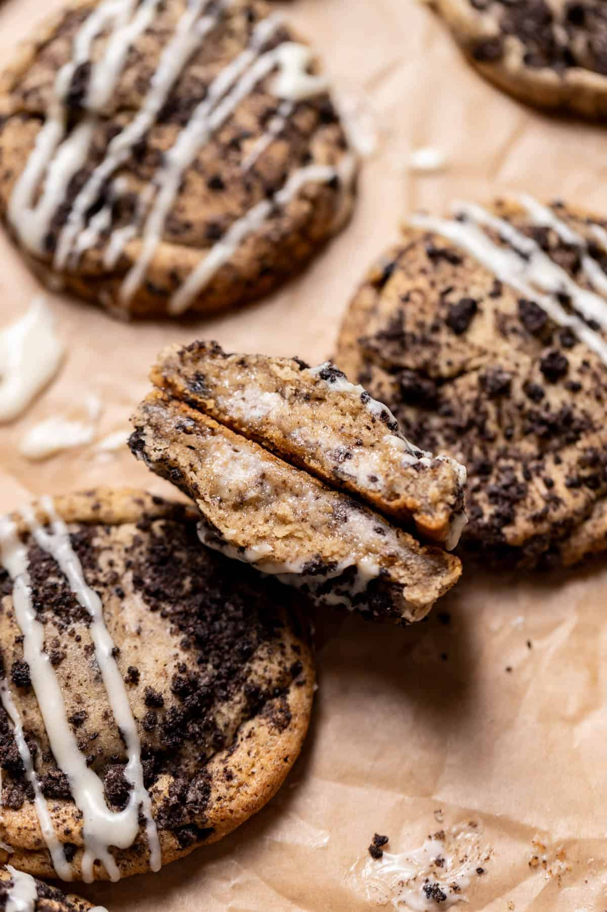

Oreo Cheesecake Cookies

Description
This is a decidant recipie for someone who loves oreos AND cheesecake.
Ingredients
Cheesecake Filling
- 6 oz cream cheese, room temperature
- 1/4 cup powdered sugar
- 2 tbsp oreo crumbs
Cookie Dough
- 12 tablespoons unsalted butter , room temperature
- 1 cup light brown sugar packed
- 1/4 cup granulated sugar
- 1 large egg, room temperature
- 1 large egg yolk, room temperature
- 1 teaspoon vanilla extract
- 1 3/4 cup all-purpose flour
- 1/2 cup Oreo crumbs
- 1 teaspoon fine sea salt
- 1 teaspoon baking soda
- 1/2 teaspoon baking powder
- 1/2 cup Oreo crumbs, for the tops
Cream Cheese Glaze
- 2 oz cream cheese, softened
- 3 tbsp powdered sugar
- 1/4 tsp vanilla
- 1-2 tbsp whole milk
Steps
- Combine the cream cheese, powdered sugar, and Oreo crumbs. Scoop 26
teaspoon balls of the cream cheese filling onto a parchment-lined
baking tray. Chill the filling in the freezer until frozen solid.
- Cream the butter, sugar, and brown sugar together for 3 minutes
until light and fluffy.
- Preheat the oven to 350° F. Line a baking sheet with parchment paper.
- Mix in the egg, egg yolk, and vanilla extract until just combined.
- Mix in the flour, Oreo crumbs, salt, baking soda, and baking powder
until just combined.
- Scoop the dough with a 2-tablespoon cookie scoop. Press one of the
frozen balls of cream cheese into the center and mold the dough
around it to seal it in completely.
- Roll the top and sides of each cookie dough ball in the extra Oreo
crumbs, then place it on a lined baking sheet. Chill the cookie
dough in the freezer for 3-4 hours minimum, overnight is best!
- Preheat the oven to 350 F/180 C. Bake 10 cookies on a tray spaced
2-3 inches apart for 13-15 minutes. Let the tray cool on a wire
cooling rack before removing them. If desired, make the cream cheese
glaze. Combine the cream cheese and powdered sugar until smooth,
then whisk in the vanilla and milk until thin. Drizzle over cookies!
Home